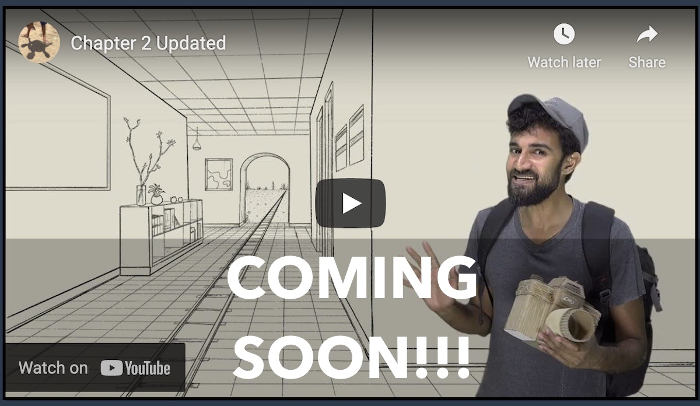

In this second chapter, we will take a much closer look at points at infinity, and use them to build a geometry that is invariant under changes in perspective. We will then explore some surprising features of this Projective Geometry.
## [Lecture 4: The Extended Euclidean Plane](./lecture-4.html)
## [Lecture 5: Three Coincidences of Projective Geometry](./lecture-5.html)
## [Lecture 6: Extending Space to Prove Desargues's Theorem](./lecture-6.html)